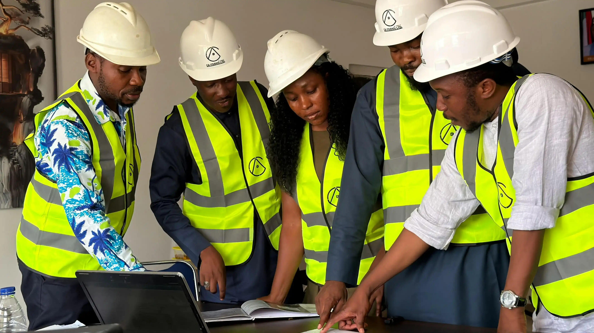
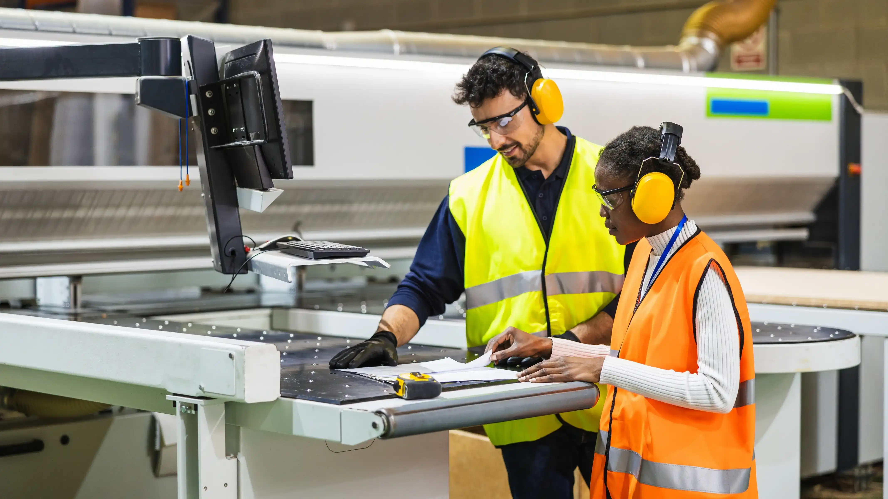

A team of qualified and experienced staff supporting industrial and commercial operations with reliable exposure assessments and compliance guidance.


IH-FoA was established to provide industrial hygiene services that are both technically sound and practically useful.
With experience in industrial and commercial environments, the team understands the balance between compliance requirements and operational realities. The focus is always the same: deliver accurate findings, communicate them clearly, and support the next step.
IH-FoA works alongside clients as a dependable partner, providing clarity where it's needed and consistency you can rely on.
At Industrial Hygiene Forensics of Americus (IH-FoA) LLC, we understand the importance of protecting your workforce, contractors and customers from occupational health hazards and illnesses; work that critically supports both compliance and day-to-day operations.
We exist to protect workers from invisible hazards, the ones that don't show up until it's too late.
Every assessment we conduct is rooted in a single goal: protecting workers from occupational health hazards before they cause harm.
We approach every exposure assessment with the rigor of a forensic investigation: detailed, methodical, and defensible.
Compliance isn't about paperwork. It's about real change on the facility floor. We bridge the gap between findings and solutions.
15+ years of hands-on industrial hygiene work in Southeast manufacturing environments, the foundation of IH-FoA's expertise.
Industrial Hygiene Forensics of Americus, LLC established to bring forensic-level IH expertise to the Southeast's underserved industrial sector.
Service area expanded to 12 states, serving manufacturing, construction, healthcare, and commercial clients from Georgia to Virginia.
Formalized analytical support through AIHA-LAP accredited laboratory, elevating the quality and defensibility of all IH-FoA reporting.
Schedule a discovery call or request an onsite assessment today.
Get in Touch →